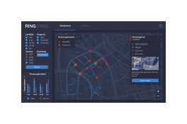

RING-RING
Niet eerder vertoonde inzichten gevisualiseerd, met betrekking tot fietsongelukken en fietsdrukte in Amsterdam.
Gebruikte data: fietsdrukte van Ring-Ring, fietsongelukken van diverse artikelen en feedback van Ring-Ring gebruikers.

Dashboard
Het Ring-Ring ‘Road to Safety’ dashboard toont een overzicht van fietsongelukken en fietsdrukte.
De ongelukken kun je filteren op leeftijd, ongeval en jaartal. Ook kan je de fietsdrukte aan/uit zetten.

Feedback
Bekijk de feedback van fietsers over gereden routes. Filter op: review ranking, trefwoorden, relevantie of meest recent.
Samen voor een betere fietsveiligheid.